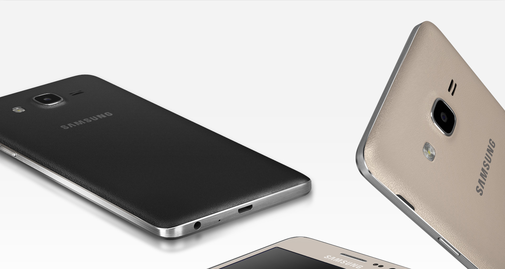

samsung
Galaxy On 7
RECURSOS
Design Fino e Elegante
Os elementos que compõem o design do Galaxy On7 fazem deste aparelho único, combinando ótima usabilidade e estilo. Aparelho fino e leve com tela grande e acabamento da tampa traseira que lembra couro.

"height="1000" width="1000"class="responsive-image" data-lazy-loaded="true" style="transition-property: opacity; transition-duration: 0.3s; transition-timing-function: ease; opacity: 1;"/>
Fotos nítidas
As funcionalidades da câmera permitem a captura de fotos em alta resolução com detalhes incríveis. Com o acesso rápido você não perde nenhuma foto. Pressione o botão Home duas vezes e sua câmera estará pronta para o registro.
Selfies Incríveis
Tirar selfies nunca foi tão fácil e divertido. A câmera frontal permite que você enquadre mais pessoas e cenários em sua composição com um ângulo de visualização maior. O controle por gesto ajuda a fazer a selfie perfeita ativando a câmera com a palma da mão.E o modo Embelezar Rosto tem efeitos surpreendentes.
Esteja sempre conectado
Com a conexão 4G você pode fazer downloads de vídeos, navegar na internet e escutar suas músicas favoritas em serviços de streaming, tudo de maneira rápida. O aparelho permite conexões Wi-Fi e possui Bluetooth para conectar-se a fones de ouvido, tablets ou outros aparelhos compatíveis.
* A velocidade de conexão à internet depende do seu provedor 4G e do tráfego no site
Bateria com supercapacidade
Além de melhor gerenciamento de energia, você pode substituir a bateria a qualquer rmomento. Escute suas músicas, navegue na internet e tire fotos sem se preocupar. Aumente o tempo de diversão.
Modo de Economia de bateria
Você não precisa mais se preocupar se a bateria do seu celular estiver acabando. Com o Modo de Ultra Economia de Energia você seleciona os recursos que quer manter funcionando e minimiza o uso da bateria.